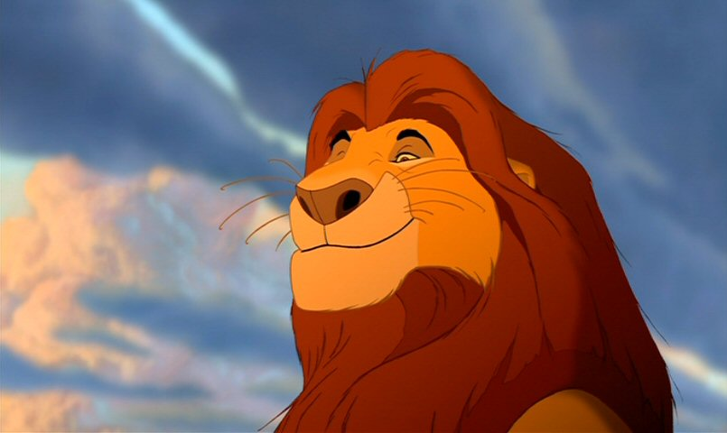
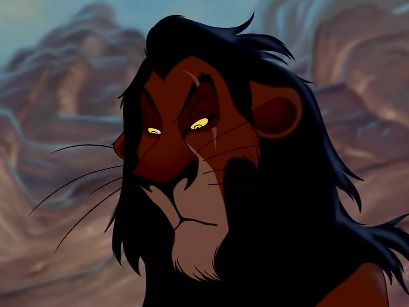
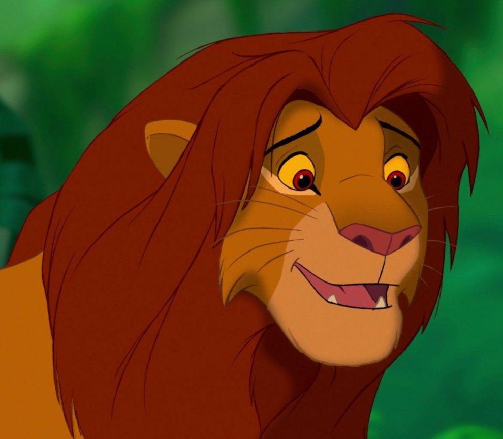

Mufasa was a good king. Mufasa was not bad. Mufasa never thought of himslef Mufasa aim as kingwas not to boss his kingdom around it was to protect it. Mufasa maried sarabi. Together they had a bay called simba. Sometimes Mufasa anoined his brother. He was betared on his day of death. His brother was the worst lion. he saved simba while his brother was trying to kill simba. And his friend was rafikiyes i know for some of you who know kiswahili i know am saying the same thing but watch the movie
 MufasaScar was a very bad lion. First of all he tried to comit murder to his nephew. Second he betared mufasa Third of all he had the confidence to kill his brother(Mufasa). Forth of all he also he had the confidence to kill his father. He made friends with The Pride LandsMufasa's kindom.enemies. But his also very hurt emotionly and Phisically. First of all again his father took mufasa's side when they went to the outlands witch they were not allowed at the time. And the mother took his side. Did you know that his name was really taka. But his father scratched him and mufasa started calling him (SCAR) And when mufasa started calling him scar he got sad.
 ScarSimba took care of the pride land preety well. He folowed in his fathers foot steps. He helps the pride lands. Did you know simba has a child who get into lots of trouble. Simba is a gentle father. His childs name is kiarashe a girl Did you know scar never sucided in killing simba bacause he killed mufasa instead and told simba to run because he was the future king. Did you know simba is the son of mufasa. Then when simba ran (After scar banished him) when he was a child pumbaa and timon took care of him like he was their son. Then mufasa's friend rafiki friend rafiki came and encouraged him to chalenge scar and take back his throne. All i can say is that kiara is lucky to have such a gentle father bacause she got into alot of trouble. Simba was also a Iresbonsible child.
 SimbaRafiki is the royal majuzi. And even a better friend to mufasa. He has a very good conection even with the dead. If it was not for rafiki simba would have not came to take back the pride lands. And if it was not for rafiki kiara and her husband would have liked got maried. If it was not for rafiki ahadi(mufasa's father) mufasa scar simba kiara chumvi and his sister (kiara's kids)would not have been presented to the pridelands. He a great friend of the pride lands. He has encouraged every one his mate. He helpt protect the pride lands. He created hakuna matata. He was the first one to find out that simba was going to be the future king even though scar took over. he alwys listens even though their dead like in the lion king:simba's pride when mufasa told him that kiara wuold get maried.
RafikiPumbaa is a very nice person. He farts alot. He is a total misunderstood animal. Before he meet timon he was ashamed of his fart. When he met timon he was used for defence. Pumbaa was alone most of his life until he met timon. Timon is a meerkat. Timon was not liked by his fellow meerkats because. His left because he was never liked by his fellow meerkats To get through the ceremony he needed pumbaa for protection. Then when they found hakuna matata The jungle they became friends together they saved and took care of simba.
Pumbaa And Timon